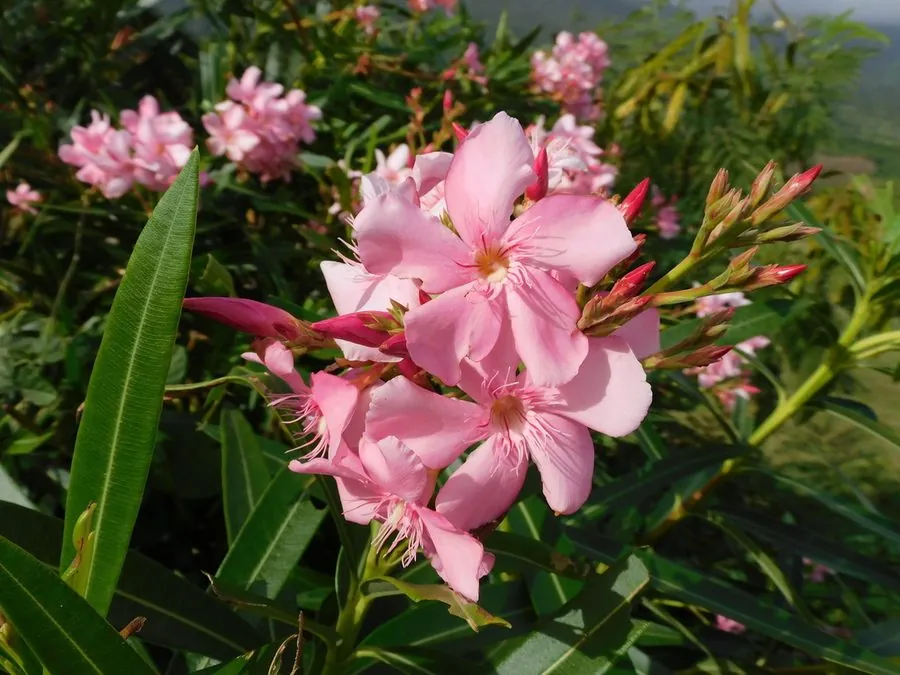

灌木与花木 · 植物界
夹竹桃 Nerium oleander

叶片狭长似竹、花朵粉红如桃的常绿灌木，抗污染能力强，是道路绿化常见树种，但全株有毒需注意。
- 分类
- 门被子植物门纲木兰纲目龙胆目科夹竹桃科属夹竹桃属
- 栖息环境
- 海拔 1000 米以下的平原、道路旁与庭院，喜温暖湿润，耐旱耐污染
- 地理分布
- 原产地中海地区及印度、伊朗，中国长江流域以南广泛栽培
- 保护级别
- 暂无评估；中国未列入国家重点保护野生植物名录
物种志
夹竹桃为常绿灌木或小乔木，高可达 5 m，枝条灰绿色，含水液；叶片革质，狭披针形，长 7–15 cm，中脉明显，侧脉平行，形似竹叶，故得名。花期 6–10 月，聚伞花序顶生，花冠漏斗形、5 裂，有粉红、白色等，重瓣品种常见，花期长而繁茂；蓇葖果长角状，成熟时开裂，种子具白色绢毛。
夹竹桃原产地中海地区及印度、伊朗一带，中国长江流域以南广泛栽培，喜温暖湿润、光照充足，耐旱、耐瘠薄，对二氧化硫、氯气等有害气体抗性强，是工厂、道路与公路绿化的常用树种。全株含多种强心苷类毒素，茎叶与花均有毒，误食可致心律失常甚至死亡，但其提取物在医药上也有应用。夹竹桃观赏价值高、养护粗放，同时因其毒性，不宜在儿童易接触处种植。
形态与习性
- 株高可达 5 m，枝条灰绿色
- 花期6–10 月，长达数月
- 果期9–11 月，蓇葖果长角状
- 光照喜光，不耐长期荫蔽
- 水分耐旱，怕积水
- 土壤适应性强，耐瘠薄
- 主要用途道路与工厂绿化、抗污染树种、药用（有毒慎用）
趣味知识
- 夹竹桃全株有毒，含强心苷类物质，误食可能危及生命，观赏时切勿采摘。
- 夹竹桃叶片狭长似竹叶、花似桃花，因此得名“夹竹桃”。
- 夹竹桃对二氧化硫等有害气体抗性强，常被种在工厂和公路两侧。
- 夹竹桃的种子带白色绢毛，果实成熟开裂后，种子可随风飘散。